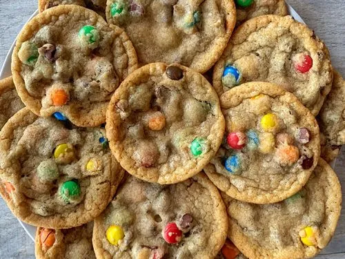

snack
M&M Cookies
Thick and gooey cookies filled with M&M's
Soft cookies filled with M&M's and chocolate chips, inspired by the original cookies from Subway.
What You'll Need
Ingredients
Cookie Dough
- 1½ cups (188g) all-purpose flour
- 1 tsp baking powder
- ½ tsp baking soda
- ¼ tsp salt
- ½ cup (113g) unsalted butter, softened
- ½ cup (100g) granulated sugar
- ⅓ cup (70g) brown sugar
- 1 large egg
- 2 tsp vanilla extract
M&M's & Chocolate
- 1 cup (200g) M&M's
- ½ cup (90g) chocolate chips
Time To Cook
Method
Make the Cookie Dough
Whisk together the flour, baking powder, baking soda, and salt in a bowl. Set aside.
Beat the softened butter, granulated sugar, and brown sugar for 1 to 2 minutes in a separate bowl until light and fluffy.
Add the egg and vanilla extract and mix until combined.
Slowly add the flour mixture and mix until just combined.
Gently stir in the M&M's and chocolate chips.
Prepare the Cookies
Line two baking sheets with baking paper.
Scoop the dough into roughly 2-tablespoon portions and shape them into balls.
Place the dough balls evenly on the baking sheets and place them in the fridge to chill for 30 to 60 minutes.
Once refrigerated, take out of the fridge and flatten each ball into a cookie shape. Respace if needed to leave a couple inches between cookies.
Bake the Cookies
Preheat the oven to 180°C.
Bake for 9 to 12 minutes, until the edges are set but the centres are still slightly underdone.
Remove the cookies from the oven and place the baking sheets on wire racks.
Allow the cookies to cool completely on the baking sheets before eating.
Recipe & Image Source
Credits
This M&M Cookie recipe was originally published by CelebratingSweets.com.
Recipe by Allison Mattina.
The image used on this page is sourced from FitWaffleKitchen.com.